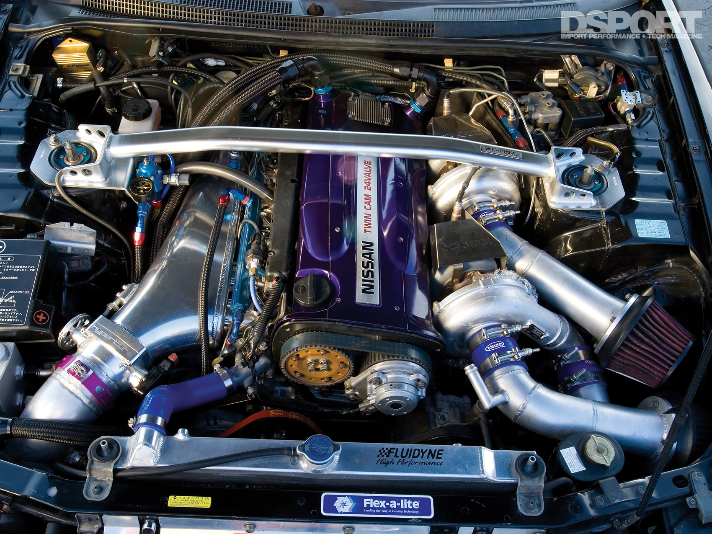

Nossos Motores
2jz-gte

O Toyota 2JZ-GTE foi a última evolução de alto desempenho da família de motores JZ. O desenvolvimento do 2JZ teve como alvo o RB26DETT da Nissan, seu rival nas competições da FIA e nas ruas. Construído sobre uma base de bloco de ferro, o 2JZ-GTE se tornou o motor principal da Toyota quando o JZA80 Supra Turbo foi lançado. O 2JZ-GTE era um motor quase à prova de balas de fábrica. Os motores de estoque 2JZ podem facilmente ultrapassar a marca de 800 cavalos de potência com facilidade
RB-26DETT
O motor de seis cilindros em linha é baseado em um bloco de ferro e uma cabeça de cilindro de alumínio. O RB26DETT apresentava um curso relativamente curto de 73,7 mm que permitia altas velocidades do motor. O motor RB foi construído para mais de 1.400 cavalos de potência e dominou os campos competitivos do circuito à pista drift. O motor RB foi construído para mais de 1.400 cavalos de potência e dominou o competitivo de drift
4G63GT
Antes que a revolução das importações decolasse nos EUA, a Mitsubishi já havia se equilibrado com o lançamento de seu motor turbo 4G63T. Disponível pela primeira vez no Galant VR-4 em 1988, o 4G63T apareceu na primeira e segunda geração Eclipse e Eagle Talon, junto com as Evoluções Lancer 1 a 9. focadas em rally e estrada. Com cada evolução do motor, tecnologia mais recente e muito mais potência de fábrica foi alcançada. A cabeça de alumínio de alto fluxo e o robusto bloco de ferro formam a base para a produção de energia, com alguns exemplos excedendo 1.000 cavalos de potência.